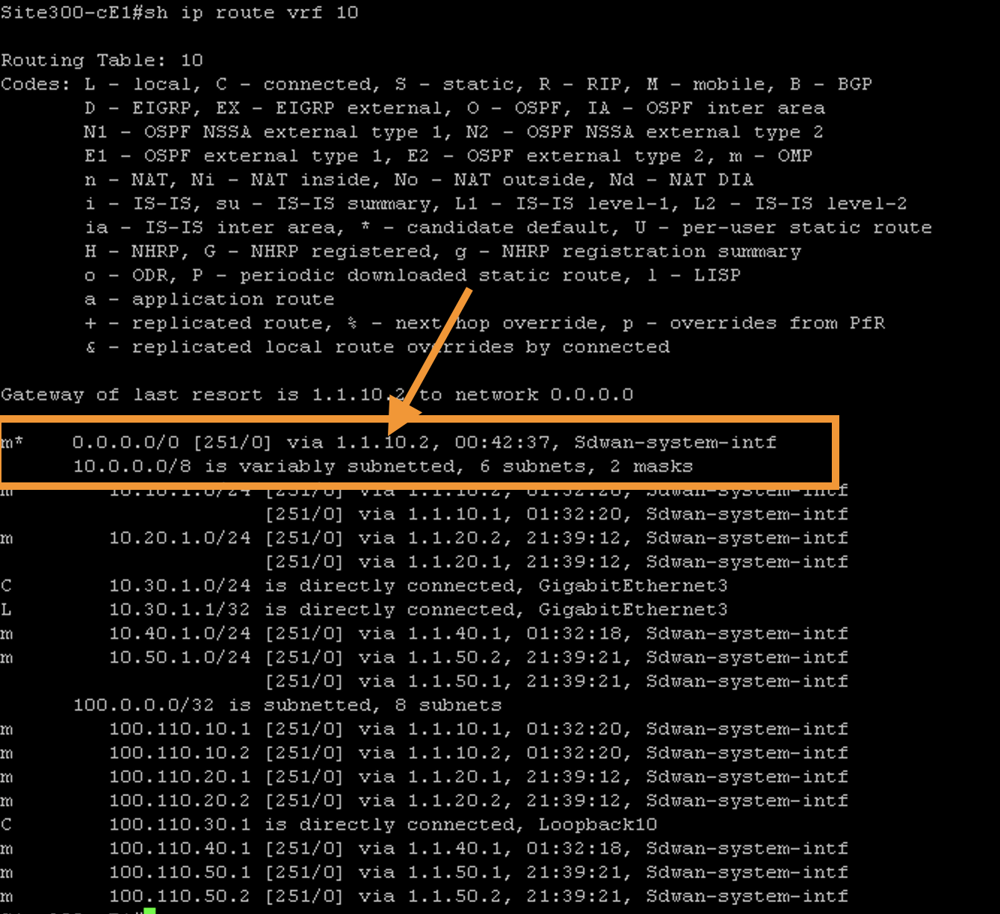

Task 3 - Regional Internet Access for All Sites
Step 1 – Verify internet access on Site300 and Site 400 VPN 10
-
On the RDP session, use
mRemoteNGapplication to logon the console of VM namedSite300-Ubuntu-VPN10. This VM exists on VPN #10 of this site. Access the Console of this Ubuntu machine (on VPN 10 segment of site 300) using mRemoteNG. -
Initially the console may be locked, click on the console and use below credentials to log on:
Username:
admin
Password:viptela

- Open Chromium Browser on Desktop of this Ubuntu machine and try to access internet website such as
cisco.com. As expected, access to these websites will fail.


- Open terminal and try to ping
8.8.8.8and pressContrl+Cafter few seconds to stop the ping. As expected there will be 100% packet loss.

- Use
mRemoteNGapplication to logon the console of VM namedSite400-Ubuntu-VPN10. Repeat the above steps to verify that there is no internet access on this Ubuntu VM on Site400 in VPN10.
Step 2 - Enable Internet on Site100 VPN10
- Open mPutty and logon to Site300-cE1 and Site400-cE1 vEdges

- Use the following command to verify routing table for both node. Note: There is no default route on vrf 10.
show ip route vrf 10
– On node Site100-cE1, add a default route in VPN 10 pointing to VPN 0. This is done by modifying the VPN10 template on vManage GUI as per below steps.
- On vManage, navigate to Configuration > Templates > Feature Templates tab.


-
Then on the search bar, search for
- Template name :
VPN_10_05-09-2022_17-18-00_vedge-C8000V_1201 - Click on the three dots
...and then Edit as shown in below screenshots
- Template name :
-
Then on the search bar, search for VPN_10_05-09-2022_17-18-00_vedge-C8000V_1201. As per search results click on the three dots (
...) at the right side and then Edit as shown in below screenshots

- Click on IPv4 Route

- Click **New IPv4 Route**
- In **Prefix** enter: **0.0.0.0/0**
- In **Gateway**, select **VPN** button
- In **Enable VPN** select **Global** from drop down menu.
- Then set **Enable VPN** to **On**

- Then set **Enable VPN** to **On**
- Further click **Add**
- Next, click on **update** for these changes to be accepted

- Click Next

- Click Configure Devices at the bottom of the page

- Verify Config-Push is successful

Step 3 - Default Route Propagation Using Cli Template
- On vManage, navigate to Configuration>Templates>Device Templates

- Click on the three dots (
...) at the right side of Site-100 Device Template

- Click on Additional Templates

- On CLI Add-on Template dropdown menu select Create Template

-
Enter the following information
- Template Name :
Default-Route-Propagation - Description :
Default Route Propagation
- Template Name :
-
In CLI configuration box paste the following commands
router ospf 10 vrf 10
default-information originate
- Click Save

-
Click Update and then Configure Device
-
Wait for task to be successfull
Step 3 - Verify Internet Connectivity on Site300 and Site400 VPN10
- Open mPutty and logon to Site300-cE1 and Site400-cE1 vEdges
- Use the following command to verify routing table for both node. Both nodes (Site300-cE1 and Site400-cE1) are recevining default route on vrf 10
show ip route vrf 10

-
Logon again to Ubuntu on Site300 VPN10
-
Open browser, Internet access should now be possible.

- Open Terminal, and ping 8.8.8.8. Ping is successful.

- On terminal do a traceroute to 8.8.8.8, use the following command
traceroute 8.8.8.8

- Verify again for Site400 VPN10